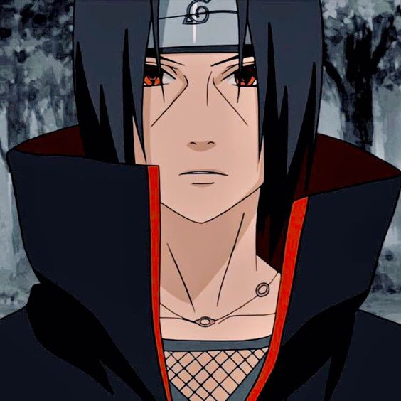

Ithachi Uchiha (うちは イタチ, Uchiha Itachi) is a character in the Naruto manga and anime series created by Masashi Kishimoto. Itachi is the older brother of Sasuke Uchiha, and is responsible for killing all the elder members of their clan, sparing only Sasuke. He appears working as a terrorist from the organisation Akatsuki and serves as Sasuke's greatest enemy.
google 